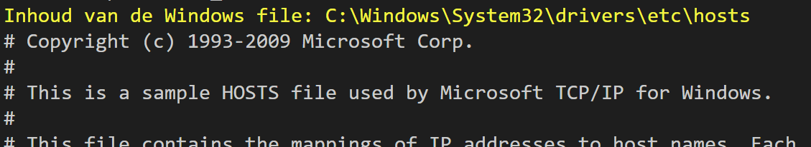
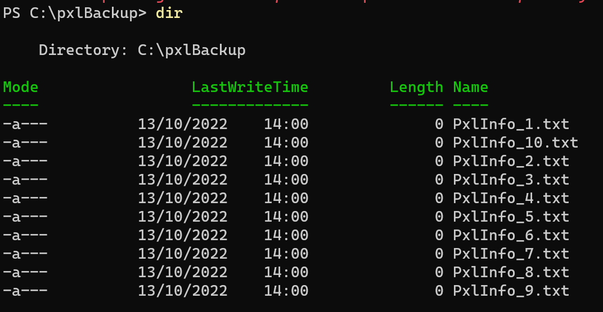

Deel 1 — Console-uitvoer formatteren
1. Tekst met voor- en achtergrondkleuren
Gebruik Write-Host om onderstaande uitvoer zo nauwkeurig mogelijk na te maken.
1.1 Welkom bij PXL
Toon Welkom bij PXL met rode tekst op een gele achtergrond.

Write-Host "Welkom bij PXL" -BackgroundColor Yellow -ForegroundColor Red
Geen echt geavanceerd antwoord nodig:
Write-Host "Welkom bij PXL" -ForegroundColor Red -BackgroundColor YellowOptioneel, welke kleuren kan je gebruiken?
Get-Help Write-Host -Parameter ForegroundColor → o.a. Black, Red, Green, Yellow, Blue, White ...
1.2 Statusmeldingen op één regel
Toon achtereenvolgens Success, Warning en Error op dezelfde regel:
Successin groen;Warningin geel;Errorin rood;- een zwarte achtergrond voor alle drie.

Write-Host "Success" -ForegroundColor Green -BackgroundColor Black -NoNewline; Write-Host "Warning" -ForegroundColor Yellow -BackgroundColor Black -NoNewline; Write-Host "Error" -ForegroundColor Red -BackgroundColor Black
Write-Host 'Success' -ForegroundColor Green -BackgroundColor Black -NoNewlineWrite-Host 'Warning' -ForegroundColor Yellow -BackgroundColor Black -NoNewlineWrite-Host 'Error' -ForegroundColor Red -BackgroundColor Black-NoNewline zorgt dat de volgende Write-Host op dezelfde regel verder schrijft. De laatste opdracht heeft geen -NoNewline, zodat de prompt daarna op een nieuwe regel begint.Elke kleur vraagt een aparte
Write-Host: één opdracht kan maar één voorgrondkleur hebben.
1.3 Identieke tabeluitvoer
Gebruik Write-Host om deze uitvoer na te maken:

De uitvoer bevat een kop Output, een scheidingslijn en de tekst I like PXL.
Write-Host "Output" -ForegroundColor Green; Write-Host "------" -ForegroundColor Green; Write-Host "I like PXL"
OF
Write-Host "Output`n------" -ForegroundColor Green; Write-Host "I like PXL"
In het tweede commando word een nieuwe regel aangegeven tussen de aanhalingstekens met `n
Met
-Separator (Course, hoofdstuk 05) in plaats van `n:Write-Host 'Output', '------' -Separator "`n" -ForegroundColor GreenWrite-Host 'I like PXL'Write-Host krijgt twee teksten; -Separator "`n" zet er een nieuwe regel tussen in plaats van een spatie.
Deel 2 — Uitvoer naar bestanden
2. Werk met windowslist.txt
Voer deze opdrachten uit vanuit de root van je Classroom-repository.
2.1 Bewaar alleen de bestanden uit C:\Windows
Toon uitsluitend de bestanden die rechtstreeks in C:\Windows staan en bewaar de uitvoer in windowslist.txt.
Get-ChildItem -Path C:\Windows -File | Out-File .\windowslist.txt
OF
Get-ChildItem -Path C:\Windows -File > .\windowslist.txt
Tonen én bewaren in één stap met
Tee-Object (hands-on 04):Get-ChildItem -Path C:\Windows -File | Tee-Object -FilePath .\windowslist.txtTee-Object schrijft de uitvoer naar het bestand en geeft ze ook door aan het scherm. Zo zie je meteen wat er bewaard wordt.
2.2 Bewaar alleen de mappen uit C:\Windows
Schrijf vervolgens uitsluitend de mappen die rechtstreeks in C:\Windows staan naar hetzelfde bestand windowslist.txt.
Get-ChildItem -Path C:\Windows -Directory | Out-File .\windowslist.txt
OF
Get-ChildItem -Path C:\Windows -Directory > .\windowslist.txt
De opdracht vraagt bewust om te overschrijven (zie 2.3). Wil je de bestanden en de mappen bewaren, voeg dan toe met
-Append:Get-ChildItem -Path C:\Windows -Directory | Out-File -FilePath .\windowslist.txt -Appendof:
Get-ChildItem -Path C:\Windows -Directory >> .\windowslist.txtBeveiliging tegen per ongeluk overschrijven:
Out-File -NoClobber geeft een fout als het bestand al bestaat (Course, hoofdstuk 05).
2.3 Wat gebeurde er met de eerdere inhoud?
Leg uit waarom de lijst met bestanden niet meer in windowslist.txt staat.
Omdat het commando Out-File zonder een extra parameter (-Append) ervoor zorgt dat de inhoud word overschreven.
Om de mappen toe te voegen aan de reeds bestaande inhoud van windowslist.txt kan je de parameter -Append gebruiken bij het eerste voorbeeld van de vraag 2.2.
Bij het tweede voorbeeld van vraag 2.2 typ je twee maal een groter-dan-teken (>>)
Out-Fileen>overschrijven standaard: de oude inhoud verdwijnt en alleen de nieuwe uitvoer blijft over.Out-File -Appenden>>voegen toe achteraan.Out-File -NoClobberweigert een bestaand bestand te overschrijven en geeft een fout.
> is een kortere schrijfwijze voor Out-File, en >> voor Out-File -Append.
2.4 Toon de inhoud van windowslist.txt
Get-Content -Path .\windowslist.txt → de volledige inhoudExtra mogelijkheden met wat je al kent:
Get-Content -Path .\windowslist.txt | Select-Object -Last 5 → alleen de laatste 5 regels(Get-Content -Path .\windowslist.txt).Count → het aantal regelsGet-Content -Path .\windowslist.txt | more → pagina per paginaGet-Content geeft tekstregels terug, geen bestandsobjecten meer: Out-File bewaarde alleen wat op het scherm stond.
2.5 Voeg een afsluitregel toe
Voeg de tekst Einde opdracht achteraan toe zonder de bestaande inhoud te overschrijven. Toon daarna opnieuw het volledige bestand.
Add-Content -Path .\windowslist.txt -Value "Einde opdracht"
Get-Content -Path .\windowslist.txt
Add-Content -Path .\windowslist.txt -Value 'Einde opdracht'Hetzelfde met
Out-File: 'Einde opdracht' | Out-File -FilePath .\windowslist.txt -AppendControle van alleen de laatste regel:
Get-Content -Path .\windowslist.txt | Select-Object -Last 1 → Einde opdracht
Deel 3 — Windows-configuratiebestanden lezen
3. Script WindowsHostFile.ps1
Maak scripts/WindowsHostFile.ps1 dat:
- de tekst
Inhoud van de Windows file:toont, gevolgd door het gebruikte pad; - de inhoud toont van
C:\Windows\System32\drivers\etc\hosts; - comment-based help bevat;
- uitvoert vanuit de PowerShell-console.
Gewenste structuur — de inhoud verschilt per systeem:

Test ook:
Get-Help .\scripts\WindowsHostFile.ps1 -FullStap 1
Maak een nieuwe map aan genaamd scripts en maak in deze map een script-bestand aan genaamd WindowsHostfile.ps1.
Stap 2
Plaats volgende inhoud in het script:
<#
.SYNOPSIS
This script shows the content of the file C:\Windows\System32\drivers\etc\hosts
.DESCRIPTION
Shows content of the file C:\Windows\System32\drivers\etc\hosts
.EXAMPLE
.\WindowsHostFile.ps1
Shows the content of the file C:\Windows\System32\drivers\etc\hosts
#>
$path = 'C:\Windows\System32\drivers\etc\hosts'
Write-Host "Inhoud van de Windows file: $path" -ForegroundColor Yellow
Get-Content -Path $path
Get-Help .\scripts\WindowsHostFile.ps1 -Full
Het pad opbouwen met
Join-Path en $env:WINDIR (Course, hoofdstuk 06) in plaats van C:\Windows vast te typen. Zo werkt het script ook als Windows op een andere schijf staat.<#
.SYNOPSIS
Toont de inhoud van het hosts-bestand van Windows.
.DESCRIPTION
Bouwt het pad naar het hosts-bestand op vanuit $env:WINDIR,
toont het pad en daarna de inhoud van het bestand.
.NOTES
Author: Angelo Switon (PXL Student)
.EXAMPLE
.\scripts\WindowsHostFile.ps1
#>
$path = Join-Path -Path $env:WINDIR -ChildPath 'System32\drivers\etc\hosts'
Write-Host "Inhoud van de Windows file: $path" -ForegroundColor Yellow
Get-Content -LiteralPath $pathGet-Help .\scripts\WindowsHostFile.ps1 -Full
4. Script WindowsHostFilev2.ps1
Maak scripts/WindowsHostFilev2.ps1 met dezelfde functionaliteit, maar bepaal het te lezen bestand via de variabele $File_To_Find.
Het script moet minstens werken met:
$File_To_Find = 'hosts'en, na het wijzigen van de variabele, met:
$File_To_Find = 'networks'Vereisten:
- bouw het pad op vanuit
$env:WINDIR; - controleer of het bestand bestaat;
- geef een duidelijke fout wanneer het bestand ontbreekt;
- toon het gevonden pad en de inhoud;
- voorzie comment-based help.
Stap 1
Maak een nieuwe map aan genaamd scripts en maak in deze map een script-bestand aan genaamd WindowsHostFilev2.ps1.
Stap 2
Plaats volgende inhoud in het script:
<#
.SYNOPSIS
Toont de inhoud van een bestand uit de map drivers\etc van Windows.
.DESCRIPTION
Het script bouwt het pad op vanuit $env:WINDIR en de bestandsnaam in
$File_To_Find. Het controleert of het bestand bestaat. Zo ja, dan worden
het pad en de inhoud getoond. Zo nee, dan verschijnt er een duidelijke foutmelding.
.EXAMPLE
.\WindowsHostFilev2.ps1
Toont het pad en de inhoud van het bestand dat in $File_To_Find staat (bv. hosts).
#>
$File_To_Find = 'hosts'
# Pad opbouwen vanuit de Windows-map
$folder = Join-Path -Path $env:WINDIR -ChildPath 'System32\drivers\etc'
$path = Join-Path -Path $folder -ChildPath $File_To_Find
# Controleren of het bestand bestaat
if (Test-Path -Path $path) {
Write-Host "Inhoud van de Windows file: $path" -ForegroundColor Yellow
Get-Content -Path $path
}
else {
Write-Error "Het bestand '$File_To_Find' werd niet gevonden op '$path'."
}
Get-Help .\scripts\WindowsHostFilev2.ps1 -Full
<#
.SYNOPSIS
Toont een bestand uit de map drivers\etc van Windows.
.DESCRIPTION
Bouwt het pad op vanuit $env:WINDIR en $File_To_Find, controleert of het
bestand bestaat en toont dan het pad en de inhoud. Bestaat het bestand
niet, dan volgt een foutmelding en de lijst met beschikbare bestanden.
.NOTES
Author: Angelo Switon (PXL Student)
.EXAMPLE
.\scripts\WindowsHostFilev2.ps1
#>
$File_To_Find = 'hosts' # of 'networks'
$folder = Join-Path -Path $env:WINDIR -ChildPath 'System32\drivers\etc'
$path = Join-Path -Path $folder -ChildPath $File_To_Find
if (Test-Path -LiteralPath $path -PathType Leaf) {
Write-Host "Inhoud van de Windows file: $path" -ForegroundColor Yellow
Get-Content -LiteralPath $path
}
else {
Write-Error "Het bestand '$File_To_Find' werd niet gevonden in '$folder'."
Write-Host 'Beschikbare bestanden:' -ForegroundColor Yellow
Get-ChildItem -LiteralPath $folder -File | Select-Object -ExpandProperty Name
}-PathType Leaf controleert dat het echt een bestand is en geen map met dezelfde naam.Bij een fout toont het script ook welke bestanden er wel zijn (bv.
hosts, networks, protocol, services), zodat de gebruiker meteen een juiste naam kan kiezen.
Deel 4 — Bestanden en mappen beheren
LET OP: De volgende opdrachten maken, kopiëren, verplaatsen en verwijderen mappen onder
C:\. Voer ze alleen uit op het aangewezen oefensysteem. Controleer vóór iedere verwijder- of verplaatsopdracht metTest-Pathdat je exact metC:\pxlData,C:\pxlBackupofC:\pxlData2werkt. Verwijder na controle alle overgebleven testmappen.
5. Beheer de PXL-testmappen
5.1 Maak C:\pxlData
Maak de map alleen wanneer ze nog niet bestaat.
Stap 1
if (-not (Test-Path -Path 'C:\pxlData')) {
New-Item -Path 'C:\pxlData' -ItemType Directory
}
Zonder
if, met -Force (hands-on 01):New-Item -Path C:\pxlData -ItemType Directory -ForceMet
-Force geeft New-Item geen fout als de map al bestaat. De bestaande map en haar inhoud blijven gewoon behouden.
5.2 Controleer of de map bestaat
Toon een Booleaanse waarde die aangeeft of C:\pxlData bestaat.
Test-Path -Path C:\pxlData -PathType Container
Optioneel kun je met -PathType Container expliciet controleren dat het een map is en geen bestand met dezelfde naam.
Geen echt geavanceerd antwoord nodig:
Test-Path -Path C:\pxlData -PathType Container → TrueOptioneel met
-LiteralPath (Course, hoofdstuk 06): dan worden tekens zoals [ en ] in een pad niet als wildcard gelezen.Test-Path -LiteralPath C:\pxlData -PathType Container
5.3 Maak pxlInfo.txt
Maak het lege bestand C:\pxlData\pxlInfo.txt.
New-Item -ItemType File -Path C:\pxlData\pxlInfo.txt
New-Item -Path C:\pxlData -Name pxlInfo.txt -ItemType FileControle:
Test-Path -Path C:\pxlData\pxlInfo.txt -PathType Leaf → TrueLet op: gebruik hier geen
-Force. Bij een bestand overschrijft New-Item -Force een bestaand bestand met een leeg bestand. Bij een map gebeurt dat niet.
5.4 Maak tien genummerde bestanden
Maak in C:\pxlData de bestanden pxlInfo_1.txt tot en met pxlInfo_10.txt met een pipeline of lus.
Met een pipeline
1..10 | ForEach-Object {New-Item -ItemType File -Path "C:\pxlData\pxlInfo_$_.txt"}
Met een lus
foreach ($i in 1..10) {
New-Item -Path "C:\pxlData\pxlInfo_$i.txt" -ItemType File
}
Controleren:
Get-ChildItem -Path C:\pxlData
New-Item aanvaardt meerdere paden tegelijk. De pipeline maakt eerst de tien namen, daarna maakt één New-Item alle bestanden:New-Item -Path (1..10 | ForEach-Object { "C:\pxlData\pxlInfo_$_.txt" }) -ItemType FileControle:
(Get-ChildItem -Path C:\pxlData -Filter 'pxlInfo_*.txt').Count → 10
5.5 Maak een back-up van de bestanden
Maak C:\pxlBackup en kopieer alleen de onderliggende bestanden uit C:\pxlData naar deze map.
Controleer het resultaat:

New-Item -ItemType Directory -Path "C:\pxlBackup"; Get-ChildItem -File -Path C:\pxlData | Copy-Item -Destination C:\pxlBackup
Controleren:
Get-ChildItem -Path C:\pxlBackup
New-Item -Path C:\pxlBackup -ItemType Directory -ForceGet-ChildItem -Path C:\pxlData -File | Copy-Item -Destination C:\pxlBackup -WhatIf → eerst bekijken wat er zou gebeurenGet-ChildItem -Path C:\pxlData -File | Copy-Item -Destination C:\pxlBackupControle: evenveel bestanden in beide mappen?
(Get-ChildItem -Path C:\pxlData -File).Count(Get-ChildItem -Path C:\pxlBackup -File).Count → allebei 11Get-ChildItem -File neemt alleen bestanden, geen submappen. Met Copy-Item C:\pxlData\* C:\pxlBackup zou PowerShell ook submappen meekopiëren als die er zijn.
5.6 Verwijder C:\pxlBackup
Controleer eerst het exacte pad en verwijder daarna de volledige testmap.
Test het pad:
Test-Path C:\pxlBackup\
Get-ChildItem C:\pxlBackup\
Tussenstap: -WhatIf
Remove-Item C:\pxlBackup -Recurse -WhatIf
Verwijder de volledige map:
Remove-Item C:\pxlBackup -Recurse
Controleren:
Test-Path C:\pxlBackup
Hetzelfde als hierboven, maar met
-LiteralPath zodat het pad exact zo gebruikt wordt als je het typt:Test-Path -LiteralPath C:\pxlBackup -PathType ContainerRemove-Item -LiteralPath C:\pxlBackup -Recurse -WhatIfRemove-Item -LiteralPath C:\pxlBackup -RecurseTest-Path -LiteralPath C:\pxlBackup → False
5.7 Verplaats C:\pxlData naar C:\pxlData2
Verplaats de map inclusief inhoud. Controleer daarna dat C:\pxlData niet meer bestaat en C:\pxlData2 wel bestaat.
Move-Item -Path C:\pxlData -Destination C:\pxlData2
Controleren:
Test-Path -Path C:\pxlData
Test-Path -Path C:\pxlData2
Controleren: kijk of de inhoud ook is meeverhuisd
Get-ChildItem -Path C:\pxlData2
Move-Item -Path C:\pxlData -Destination C:\pxlData2 -WhatIf → eerst bekijkenMove-Item -Path C:\pxlData -Destination C:\pxlData2Beide paden in één opdracht controleren:
Test-Path -Path C:\pxlData, C:\pxlData2 → False, True(Get-ChildItem -Path C:\pxlData2 -File).Count → 11: de inhoud is meeverhuisd.
5.8 Ruim de testomgeving op
Verwijder C:\pxlData2 nadat de docent het resultaat heeft gecontroleerd.
Remove-Item C:\pxlData2\ -Recurse
Controleren:
Test-Path C:\pxlData2
Je kan altijd een -WhatIf uitvoeren om op veilig te spelen.
Remove-Item C:\pxlData2 -Recurse -WhatIf
Remove-Item -LiteralPath C:\pxlData2 -Recurse -WhatIfRemove-Item -LiteralPath C:\pxlData2 -RecurseEindcontrole van de volledige testomgeving in één opdracht:
Test-Path -Path C:\pxlData, C:\pxlBackup, C:\pxlData2 → drie keer False
Deel 5 — Meten en zoeken
6. Statistieken van bestandsgroottes
Gebruik alleen de bestanden die rechtstreeks in C:\Windows staan. Bereken voor de property Length:
- het maximum;
- het minimum;
- het gemiddelde;
- de som.
Toon alle waarden in MB met precies twee cijfers na de komma en gebruik de kolomnamen Max(MB), Min(MB), Average(MB) en Sum(MB).

Get-ChildItem -Path C:\Windows -File |
Measure-Object -Property Length -Maximum -Minimum -Average -Sum |
Select-Object
@{Name='Max(MB)'; Expression={'{0:N2}' -f ($_.Maximum / 1MB)}},
@{Name='Min(MB)'; Expression={'{0:N2}' -f ($_.Minimum / 1MB)}},
@{Name='Average(MB)'; Expression={'{0:N2}' -f ($_.Average / 1MB)}},
@{Name='Sum(MB)'; Expression={'{0:N2}' -f ($_.Sum / 1MB)}}
Met een extra kolom voor het aantal bestanden, als tabel (Course, hoofdstuk 05):
Get-ChildItem -Path C:\Windows -File |
Measure-Object -Property Length -Maximum -Minimum -Average -Sum |
Select-Object @{Name='Aantal'; Expression={$_.Count}},
@{Name='Max(MB)'; Expression={'{0:N2}' -f ($_.Maximum / 1MB)}},
@{Name='Min(MB)'; Expression={'{0:N2}' -f ($_.Minimum / 1MB)}},
@{Name='Average(MB)'; Expression={'{0:N2}' -f ($_.Average / 1MB)}},
@{Name='Sum(MB)'; Expression={'{0:N2}' -f ($_.Sum / 1MB)}} |
Format-TableMeasure-Object rekent in bytes. Delen door 1MB geeft megabytes; '{0:N2}' -f toont precies twee cijfers na de komma.Format-Table staat altijd als laatste in de pipeline: daarna zijn het geen gewone objecten meer maar opmaakregels.
7. Zoek recente Word-bestanden
Zoek recursief onder C:\Users naar bestanden met extensie .doc of .docx die zijn aangemaakt na 1 oktober 2022.
LET OP: Een recursieve zoekactie onder
C:\Userskan traag zijn en toegangswaarschuwingen geven. Wijzig of verwijder geen gevonden bestanden.
Toon minstens Name, CreationTime en FullName en onderdruk alleen verwachte toegangswaarschuwingen.
Get-ChildItem -Path C:\Users -File -Recurse -Include *.doc, *.docx -ErrorAction SilentlyContinue |
Where-Object { $_.CreationTime -gt (Get-Date -Date '2022-10-01') } |
Select-Object Name, CreationTime, FullName
Alternatief met de -in-operator
Get-ChildItem -Path C:\Users -File -Recurse -ErrorAction SilentlyContinue |
Where-Object { $_.Extension -in '.doc', '.docx' -and $_.CreationTime -gt (Get-Date -Date '2022-10-01') } |
Select-Object Name, CreationTime, FullName
Gesorteerd, nieuwste eerst, en met het aantal:
$wordFiles = Get-ChildItem -Path C:\Users -File -Recurse -Include *.doc, *.docx -ErrorAction SilentlyContinue |
Where-Object { $_.CreationTime -gt (Get-Date -Date '2022-10-01') } |
Sort-Object CreationTime -Descending
$wordFiles | Select-Object Name, CreationTime, FullName
Write-Output "Aantal Word-bestanden: $(($wordFiles | Measure-Object).Count)"-Include aanvaardt meerdere patronen; -Filter maar één. -ErrorAction SilentlyContinue onderdrukt alleen de meldingen over mappen waar je geen toegang toe hebt; de zoekactie gaat gewoon verder.
Eindcontrole
- Alle losse antwoorden en commando's staan in
answers.md. -
WindowsHostFile.ps1enWindowsHostFilev2.ps1staan inscripts/. - Beide scripts bevatten comment-based help en voeren uit zonder syntaxfouten.
-
windowslist.txteindigt metEinde opdracht. - De testmappen onder
C:\zijn na controle verwijderd. - De verwachte kolomnamen en getalnotatie zijn gebruikt.
- Alle bestanden zijn gecommit en gepusht naar GitHub Classroom.